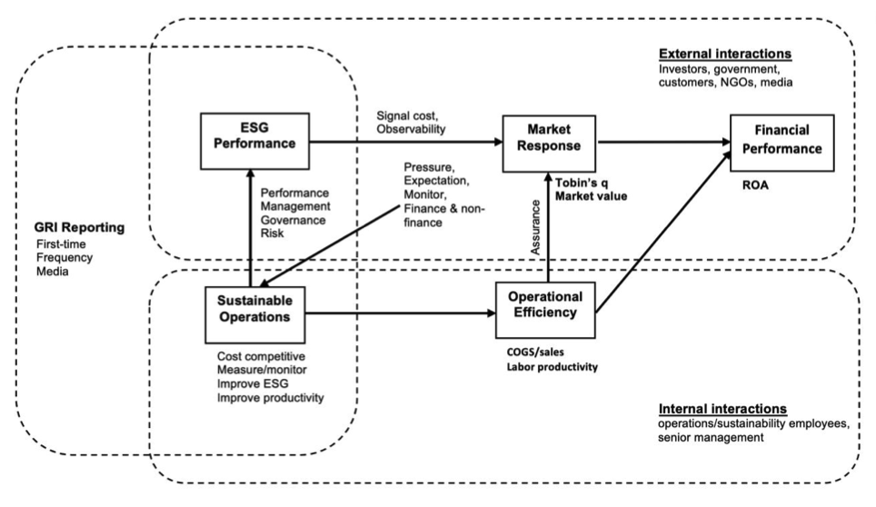

I focus on developing and applying arificial intelligence models to enhance operations and supply chain management. I am currently an assistant professor at University of Sussex Business School (USBS). Also, I am an visiting research fellow at Leeds University Business School (LUBS). I obtained my PhD degree at Hong Kong Polytechnic University(HKPolyU) and completed AI course and projects at The Hong Kong University of Science and Technology (HKUST).
My research interests are sustainable operations, Natural Language Processing (NLP) and Machine Learning applications, healthcare operations, fashion business and supply chain, supply chain innovation, etc.
🔥 News
- 2025.09: An empirical paper that explores the performance impact of sustainability reporting has been accepted in IJPE.
- 2025.06: I am happy to share will be joining University of Sussex Business School as an assistant professor in 25/26 academic year.
- 2024.03: 🎉 A methodology paper is accepted at AOM 2024 .
- 2024.02: 🎉 A paper is accpeted at EurOMA 2024.
📝 Working projects
📝 Published projects

Mingze Xu, Christina Wong, Chee Yee Wong, Sakun Boon-itt
- Presented at AOM, EurOMA
- Revise & Resubmit at International Journal of Production and Economics.
- Methodology Feature: Event study using Secondary data

Mingze Xu, Ivan Ka Wai Lai, Huajun Tang
- Journal of Consumer Behaviour. 2021.
- Methodology Feature: Survey methodology using primary data.
- This study explores the mediating effects of relationship quality between supplier CER and BRPI.